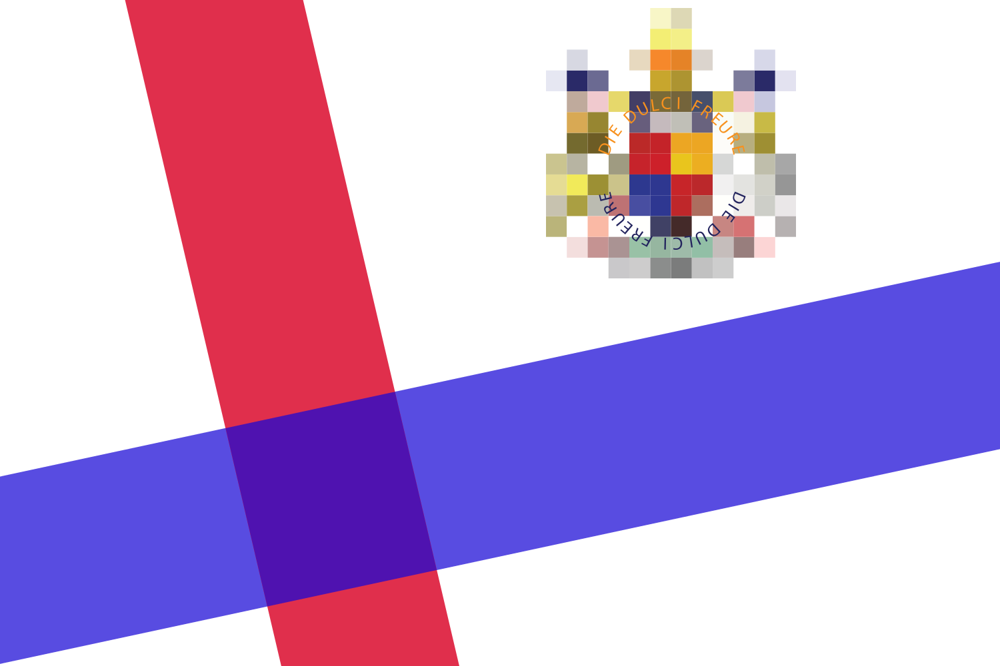

Llyfrgell DynTylluan
Nid yw Y Deyrnas o Hyfryd mewn gwirionedd yn lle go iawn, gan mai dim ond ar y Rhyngrwyd ac nad oes ganddo dir ei hun. Dechreuodd Hyfryd gan Brenin Danny I (Danny Wallace, comedydd Prydeinig) ar gyfer y rhaglen teledu, Sut i Dechrau Eich Gwlad Eich Hun, a ddarlledwyd ar BBC Dau yn 2005.
Roedd y rhaglen yn ymwneud â King Danny yn mynd o gwmpas y byd a chyfarfod pobl sy'n gwybod am y pethau hynny, fel Dennis Hope, pwy ym 1980 honnodd y lleuad drosto'i hun (nid yw Hope yn berchen ar y lleuad)
Fodd bynnag yn y blynyddoedd diweddarach mae llai a llai o bobl yn mynd i lovelycountry.net
(Prifddinas Lovely (sydd dim ond yn brifddinas oherwydd dyma'r dudalen gartref ar gyfer gwefan Hyfryd)) mae'n debyg ei bod hi'n jôc sydd bellach yn hen.
Enw anthem genedlaethol Y Deyrnas o Hyfryd yw 'Anthem Cenedlaethol Deyrnas o Hyfryd gan Banks a Wag' canu gan y Brenin Danny I
???
Ysgrifennu gan Clive "James" Python, c.2015.
https://owlman.neocities.org/library/kingdomoflovely.html
https://web.archive.org/web/*/https://owlman.neocities.org/library/kingdomoflovely.html
Dda i Anghofio
Cyfeiriadau